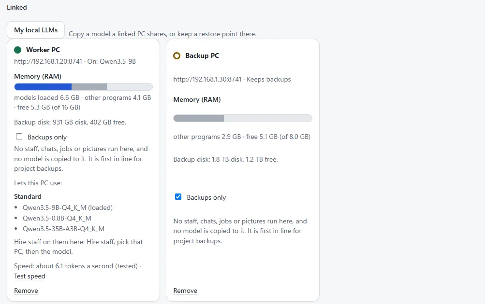

Linked PCs
Using a node's models, two PCs on one node, what a linked PC card shows.

Network, under Linked PCs, starts with a grid of every linked PC: a mark, then its name. Green is up to date and well, yellow runs an older TOMLIN, red has a fault (press it for the reason; a failed update has See progress and Retry), grey is off or not answering, and a turning ring is updating, copying or downloading now. Hover over a cell, or reach it with Tab, for its specs: computer name, processor, RAM, graphics card, TOMLIN version, free space on its models drive, the model loaded and what it is doing. The line above counts each kind ("12 PCs: 9 up to date, 2 outdated, 1 off"); press one to show only those, and Update all outdated updates every PC behind. The same grid is at the top of Models on my other PCs, where an update shows in its cell instead of a line of its own. Two PCs with the same name are told apart by their computer name, for example Worker PC (DESKTOP-1). Under the grid, each linked PC is a card: what it has loaded, its memory bar, the models it lets this PC use and its speed. The filter All, On, Asleep, Off narrows the list. Models on my other PCs (Copy a model a linked PC shares, or keep a restore point there) and TOMLIN on linked PCs, Update all linked PCs sit with it.
- Backups only, ticked on a card, makes that PC a place for backups and nothing else (Backups).
- Don't borrow from it, ticked on a card, leaves that PC out of Max mode and Cluster.
- A yellow (!) on a card means its RAM is 95% in use or more right now, or that it runs an older TOMLIN (see Moving staff and Updates).
- Test network, under the linked PCs, tests the links.
The speed of a linked PC's model is timed with Test speed and Find the fastest setup: see Speed.